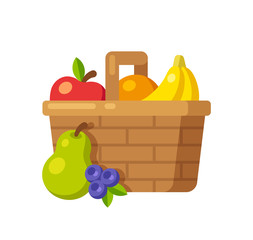

Fruits 

Apple
Apples are the ideal fruit to eat at any time, having a positive role in the achievement of nourish balance. Their skin may be green, yellow or reddish and the meat taste ranges from a bitter to sweet flavour.
0 KG

Banana
The banana is a lengthy yellow fruit, found in the market in groups of three to twenty fruits, similar to a triangular cucumber, oblong and normally yellow. Its flavour is more or less sweet, depending on the variety.
0 KG

Grapes
The grape is a fruit that grows in tight clusters. It has a white or purple flesh of sweet taste, eaten raw or in juice, although it is chiefly used for making wine. They are also used to make preserves.
0 KG

Orange
Round orange fruit, consumed mainly in winter. Its flesh is also orange and is formed by small bags full of juice. The orange is used for consumption in fresh and for the industry, mainly in juice. Nutrition and eating